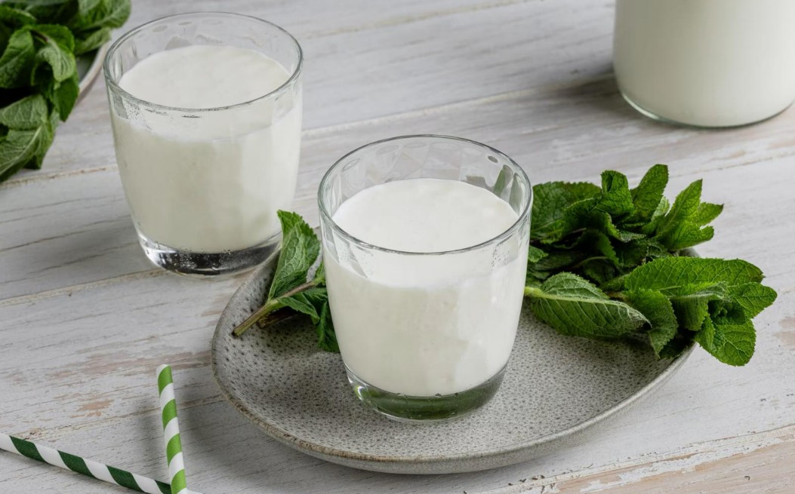

Ayran
Ayran is a traditional Turkish drink made from a simple mix of yogurt, cold water, and a pinch of salt. It’s cool, refreshing, and slightly tangy — the kind of drink that cuts through rich or spicy foods and leaves you feeling light and refreshed. In Türkiye, ayran is more than just a beverage; it’s a mealtime staple, often served alongside kebabs, rice dishes, and other hearty foods.
It’s typically whisked until frothy, giving it a smooth, airy texture. You’ll find it everywhere in Türkiye — from homes and restaurants to street-side grills and even fast-food spots. Many people also see ayran as a natural, healthy alternative to sugary soft drinks.
Overall, Ayran is a simple but beloved part of Turkish culinary culture, known for its cooling taste and everyday comfort.
Ingredients
- 500g yogurt
- 500ml cold water
- 1 TL salt
- 1 TL optional: mint, cucumber or basil
How to Make It
- Put the yogurt in a bowl and add the cold water. Stir until a uniform consistency is formed.
- Then add the salt and stir well again until the salt dissolves completely. The traditional ayran must be stirred vigorously until a thick layer of foam is formed. Then let it rest for a few minutes.
- Optionally, you can garnish the drinking yogurt with fresh mint, cucumber or basil.